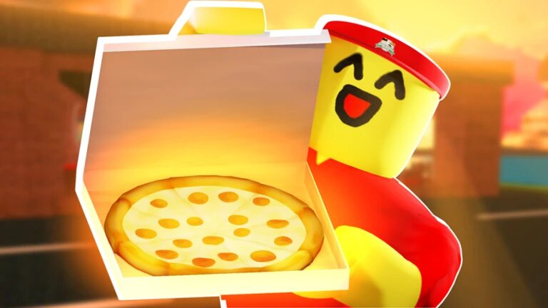

When the player first enters the game, they get to decide which position they would like to start out as. Players can choose to be a cashier, a cook, a pizza boxer, a delivery driver, a supplier, the manager, or a civilian at home. As players continue working in their position, they make more money to buy upgrades, customize their homes, and purchase clothing and accessories.
